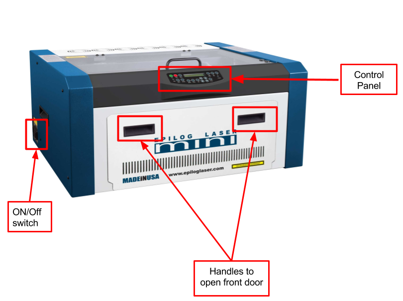
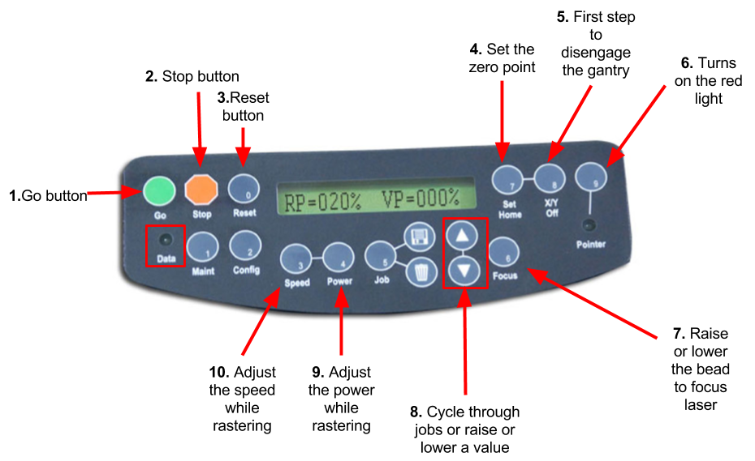
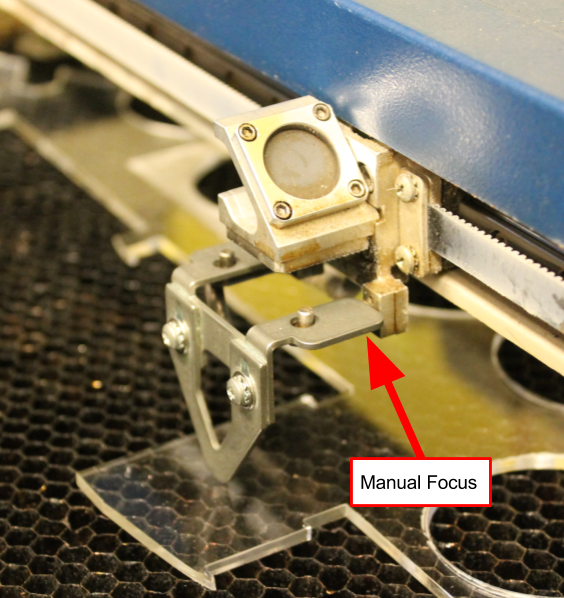
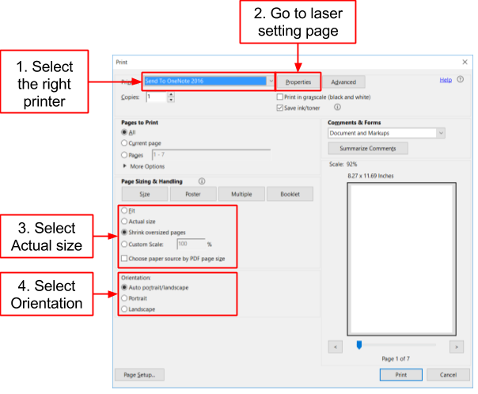

Laser cutting
Table of contents
What is a laser cutter?
The simplest answer to that question is that it is a laser that cuts. It is composed of a bed or platform onto which the material to be transformed is placed. On top of the bed there is the laser cutter head assembly. It is composed of a mirror and a converging lense which can move in 2 dimensions. This lense focuses a beam of light which will either cut through or engrave the material below. The laser cutter is optimal for precise and complex jobs.
Getting to know the laser cutter setup
There are 4 parts to the laser cutter setup:
- Computer
- Air Filter
- Laser Cutter
- Air Compressor
As shown in the image below, the laser cutter has an on/off located on the bottom left hand side of the laser. The main control panel located on the front.
There are a few important safety features incorporated into the laser cutter. Placed on the glass lid is a magnetic switch. If the lid is opened while the laser is running, the lense mechanism will keep moving, but the laser will stop firing. This means that it is very difficult (if not impossible) to burn yourself with the laser. A similar mechanism is incorporated into the front door.
Control Panel
- Go:Start or stop a job or process
- Stop: Stop a process. When rastering it will stop right away. When vectoring it will only stop once it has finished its current path
- Reset: Moved the head back to its current home
- Set Home: Sets the zero point or starting point of the laser
- X/Y Off: Press this button and then go to disengage the motors and move the laser head around manually
- Pointer: Turn on the red light pointer
- Focus: Press this button then either the up or down button to raise or lower the bed. Using this process along with the focussing tool, you can focus the laser.
- ∆/∇:Cycle through the jobs or raise or lower the power, speed, or bed height
- Power: While rastering you can adjust the power by pushing this button on using the arrow keys
- Speed: While rastering you can adjust the speed by pushing this button on using the arrow keys
What can it do?
The laser cutter has two different methods of transforming the material,
either rastering or vectoring. Rastering is a type of engraving, where top layers of the material are removed to create a depression in the material. You will know the laser
is rastering because it is moving back and forth like a regular 2D printer. Our laser has a built in setting that distributes the power settings over different shades. This means that a darker shade will look darker because it received
more power when rastered. Think of it like a black and white printer.
Vectoring is most often used to cut through a material. However, at lower settings it can also be used to engrave. Instead of moving back and forth, the laser is following a “vector”. A vector is a line with a specified direction and
magnitude. In other words, a line that connects two points. Our laser has a point of 0.001” (0.0254 mm) in diameter. For a line to be recognised as a vector, the line width has to be the size of the point. We will explain how to do this further
in this document.
How to laser cut in the Makerspace
To be able to laser cut at the makerspace we require that you either:
- Attend a laser cutting workshop
- Attend a walk-in training session
- Are under the direct supervision of someone who has received training
Before the using the laser cutter, please read the page on Laser Safety. All the informationg in this document can also be found in the OWNER'S MANUAL FOR EPILOG MINI/HELIX.
The laser cutting process is as follows:
- Prepare your file and select your material
- Move your file to the laser cutter computer
- Turn on laser cutter setup
- Prepare laser cutter
- Click print and select print settings
- Start the cut
- Turn off laser cutter setup
- Clean up
1. Prepare your file and select your material
Before you are going to start laser cutting, you need to get some prep work out of the way. First you need to create or select your file. If you are rastering an image, you can select or create an image in any program or use an existing picture.
If you are rastering an image, you can select or create an image in any program or use an existing picture.
If you want to add vector cuts, you need to use a program that has the ability to create vectors. We use a free program called Inkscape. A guide on how to use the program can be found here. Unfortunately you can’t print directly from inkscape, you need to simply save your file as .pdf.
2. Move file to the laser cutter computer
Once you have saved your file as a .pdf, move it to a USB drive and bring it over to the laser cutter computer. Open your file on the computer.
3.Turn on the laser cutter
There are three items to turn on:
- Laser cutter: Switch on left hand side at the back. When you turn on the laser cutter, let the head move around freely. Refrain from touching any other buttons until it has finished this process.
- Air filter: Power button at bottom front.
- Air compressor: Switch Located on top left hand side
4. Prepare the laser cutter
The laser cutter needs to be be adapted to the material and image you are going to cut. This is done by changing the height and the laser’s home. The height affects the laser’s focus and the home is related to the center engraving. More information about this can be found on the laser settings page.
-
Setting Home: This is setting the origin for the laser. If you do not have center engraving select. This will be the top left hand corner of the piece. For more information, see the laser setting page.
- Make sure the laser cutter is on.
- Press the pointer button. You should see a red dot under the laser head. That is the current location of the laser.
- Press X/Y off.
- Press Go. You should be able to freely move the laser cutter head.
- Move the laser head so that the red dot is at the desired origin.
- Press set home. You should no longer be able to move the laser head and you home is set.
-
Focusing laser: We do not use the automatic focus function on the laser, therefore you need to manually focus the laser before your cut.
- Make sure the laser is on.
- Place the material on the laser bed. You want to make sure that the are you are cutting is parallel to laser bed and the track on which the laser head moves. If there is a variation in height, you will see a variation in properties of the rastering and vectoring done by the laser
- Place the manual focus guide onto the laser cutter head. The guide is attached with magnets. 
- Press the Focus button on the laser cutter control panel. The laser head will move over slightly, make sure that the material is still under the manual focus.
- Using the up and down arrows, lower or raise the bed until the manual focus guide is resting on the material without being lifted off the base.
5. Click print and select settings
On the computer, click print. The print setup window will appear.
- Change the printer to the laser cutter you are going to be using
- Go to the properties page. This will bring up a page on the laser cutter settings. Consult the laser cutter manual for the proper speed and vector settings. More information on settings can be found on the Laser Settings page. When you are done selecting all your settings, click ok. This will take you back to the print page.
- Make sure that the picture is set to Actual size. If it is set to fit the vector lines will most likely not work.
- Select orientation, either auto, portrait, or landscape.. Most of the time, this will be set to auto portrait/landscape. This means that the laser will look at the size of the image you are attempting to cut and the size that you have added in the properties page. It will attempt to place the image in the way that it will fit best. If you want your image in a specific direction, select either portrait or landscape.
When all settings are chosen, click print. If you look over to the laser cutter the name of the file should appear on the control panel. Wait until the data light is no longer flashing.
6. Start cut
- Make sure that the glass cover is down and that you have prepare the laser. Check that your job is set on displayed on the laser cutter.
- Press the green go.
- While the laser cutter is cutting, do not leave the laser cutter unattended. If small flames appear, do not panic. As long as you piece is not actively burning, you are ok. If at any point you are unsure, pause your cut and find the Makerspace coordinator on duty. You can pause your cut by pressing the red stop button. Leave the lid closed. To resume, press the green go button
7. Turn off laser cutter setup
When you are finished all your cuts, turn off the laser cutter, air compressor, and air filter.
Clean up
So that our laser remains operational, it is important that we clean up after each cut. Clean off any debris that can be found on the the laser cutter bed. Using the handles on the front of the laser cutter, open the front of the laser. Empty the debris tray and replace it.